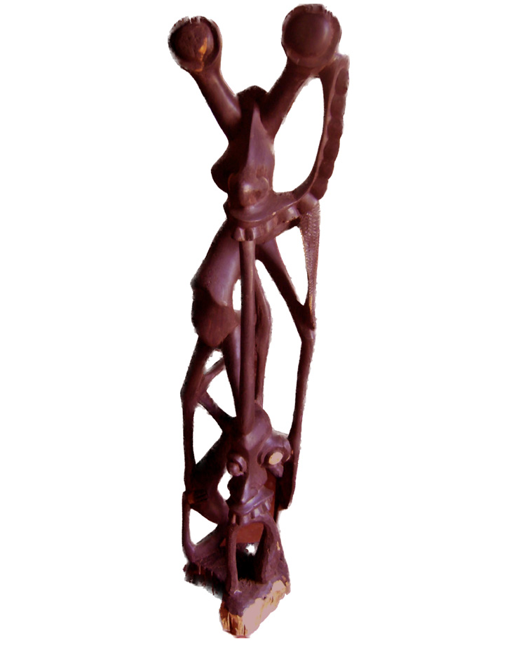
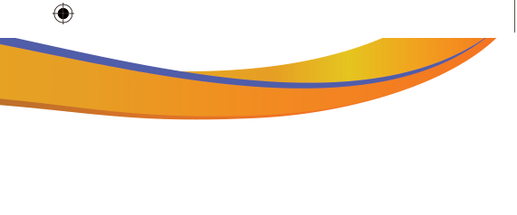

Activity 5.7
Use various sources including the internet to collect different images of the ujamaa styles and discuss their characteristics.
Exercise: 5.7
1.
A ‘family tree’ and ‘Ujamaa’ are specific Makonde styles. Discuss the major difference.
2.
Robert Yakobo Sangwani passed away many years ago. Briefly explain why he is still remembered in Tanzania?
Shetani style
It was introduced by Samaki Likankoa in the 1960s.
The original sculpture was inspired by the Makonde evil spirit.
The sculpture is characterised by the creation of abstract figures, representing terrified and distorted features such as a single body part, or undefined facial features and bodies of animals to signify evil spirits.
It was called Shetani as it was inspired by the Makonde mythology.
Figure 5.11 shows the Shetani-style sculpture.

Figure 5.11: Shetani style Source: Carved by Kashimiri Mathayo in 2008 (Photo by Dinnah Enock, 2011)